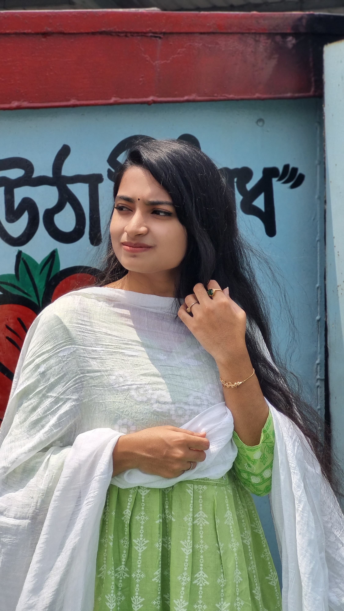

About Me

I am Asriva Alam, a recent graduate from National University with a Bachelor's degree in Finance and Banking. My academic journey has equipped me with a robust understanding of financial principles, analytical skills, and a strategic mindset. However, my true passion lies in the realm of creativity and communication, where I have cultivated a distinctive voice as a content writer.
During my tenure at Farhana's Brainstation, I had the privilege of crafting engaging and insightful content that not only captivated audiences but also conveyed complex information in a relatable and accessible manner. This experience has allowed me to develop a diverse skill set, including research, SEO optimization, social media management, and brand storytelling.
Creativity is at the core of my professional identity. I believe in the power of words to inspire, inform, and influence. Whether it's through blog posts, articles, social media content, or marketing materials, I strive to deliver content that is both impactful and memorable. My approach is centered on understanding the audience's needs, tailoring messages to resonate with them, and consistently delivering high-quality work.
In addition to my content creation expertise, my background in finance and banking provides a unique perspective that enables me to tackle topics within this domain with authority and precision. I am adept at breaking down complex financial concepts into digestible and engaging content, making finance accessible to a broader audience.
This portfolio is a showcase of my journey, skills, and achievements. Here, you will find a selection of my work that highlights my versatility as a content creator and my commitment to excellence. I am excited to collaborate with like-minded professionals and organizations that value creativity and innovation.
Thank you for visiting my portfolio. Let's connect and explore how we can create compelling narratives together.
During my tenure at Farhana's Brainstation, I had the privilege of crafting engaging and insightful content that not only captivated audiences but also conveyed complex information in a relatable and accessible manner. This experience has allowed me to develop a diverse skill set, including research, SEO optimization, social media management, and brand storytelling.
Creativity is at the core of my professional identity. I believe in the power of words to inspire, inform, and influence. Whether it's through blog posts, articles, social media content, or marketing materials, I strive to deliver content that is both impactful and memorable. My approach is centered on understanding the audience's needs, tailoring messages to resonate with them, and consistently delivering high-quality work.
In addition to my content creation expertise, my background in finance and banking provides a unique perspective that enables me to tackle topics within this domain with authority and precision. I am adept at breaking down complex financial concepts into digestible and engaging content, making finance accessible to a broader audience.
This portfolio is a showcase of my journey, skills, and achievements. Here, you will find a selection of my work that highlights my versatility as a content creator and my commitment to excellence. I am excited to collaborate with like-minded professionals and organizations that value creativity and innovation.
Thank you for visiting my portfolio. Let's connect and explore how we can create compelling narratives together.
Portfolio
Contact
Feel free to reach out to me on social media or via email.